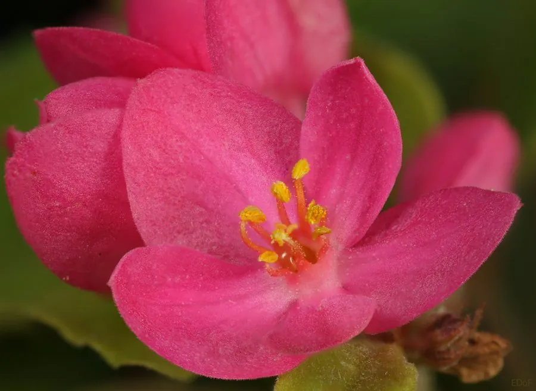

花卉与草本 · 植物界
珊瑚藤 Antigonon leptopus

蓼科珊瑚藤属多年生藤本，花粉红色、花被片似珊瑚，花期极长，攀援在篱架上如粉色花瀑，是热带常见的观赏藤本。
- 分类
- 门被子植物门纲木兰纲目石竹目科蓼科属珊瑚藤属
- 栖息环境
- 热带亚热带篱架与路旁，喜高温湿润、阳光充足
- 地理分布
- 原产墨西哥与中美洲；中国广东、广西、福建、海南、云南、台湾栽培并逸生
- 保护级别
- 暂无评估；在部分地区因繁殖力强被视为入侵植物
物种志
珊瑚藤为蓼科珊瑚藤属多年生藤本，茎细长、具卷须，攀援可达数米，块根纺锤形。叶片互生，心形至卵状三角形，边缘波状，表面深绿。花组成顶生或腋生的圆锥花序，花被片五枚，粉红色至玫红色，形似珊瑚，花期五月至十一月；瘦果圆锥形，成熟时褐色，果期秋冬季。
珊瑚藤原产墨西哥、中美洲，中国广东、广西、福建、海南、云南、台湾等地有栽培，常逸生于路旁和灌丛。它喜高温湿润和充足阳光，不耐寒，适宜疏松肥沃、排水良好的土壤，生长迅速。花粉色、花期长，攀援在篱笆、棚架上如粉色花瀑，是热带和亚热带地区常见的观赏藤本；块根可食，但口感不佳。因繁殖力强，在部分地区被视为入侵植物。
形态与习性
- 株高藤本，茎长可达 5 m
- 花期5–11 月，花被片粉红色
- 果期秋冬季，瘦果圆锥形
- 光照极喜光，全日照花更繁
- 水分喜湿润，耐短期干旱
- 土壤疏松肥沃的壤土
- 主要用途篱架棚架绿化、花瀑景观
趣味知识
- 珊瑚藤的粉色花被片质地似珊瑚，成串开放时像一挂粉色珊瑚串。
- 它靠卷须攀援，生长迅速，一季可爬满整面篱笆。
- 珊瑚藤的块根富含淀粉，原产地居民曾在饥荒时煮食。